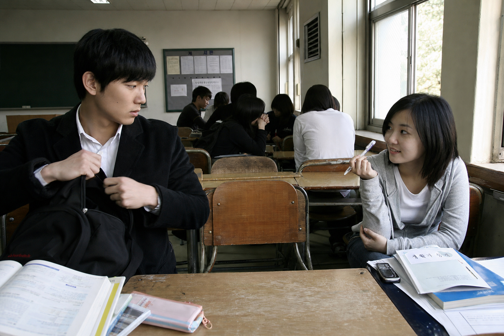

ep.026 차 안에서 정하지 말자
월요일 아침.
평택대학교 정문 앞 도로는 주말 동안 쌓인 먼지가 봄바람에 얇게 일어났다. 김용식은 차창을 반쯤 내린 채 주차장으로 들어갔다. 바람에는 아직 찬 기운이 남아 있었고, 히터를 끄자마자 손등이 서늘해졌다.
폴더폰은 조수석 위에 놓여 있었다.
닫아도 자꾸 생각났다.
토요일 밤에 온 문자였다.
그 뒤로 답장을 하지 않은 채 일요일을 넘겼다. 초연에게 보여 줘야겠다는 생각은 했지만, 막상 휴대폰을 꺼내려 하면 손이 멈췄다. 보여 주면 잘한 일이 될 수도 있었고, 괜히 새로운 화제가 될 수도 있었다. 어느 쪽이든 피곤했다.
피곤하다는 생각을 하는 순간, 용식은 자신이 이미 한 번 숨기고 있다는 걸 알았다.
차 문을 닫았다.
BMW의 문 닫히는 소리가 주차장 벽에 낮게 울렸다.
강의실에는 아직 절반 정도만 자리가 차 있었다. 창가 쪽에는 같은 과 남자애들이 모여 앉아 있었고, 가운데 줄에는 정다은이 가방을 의자에 걸어 둔 채 볼펜 끝으로 책상을 톡톡 두드리고 있었다.
[정다은] "야, 김용식."
용식은 가방을 내려놓았다.
[김용식] "응."
[정다은] "너 토요일에 문자 봤어?"
강의실 소음이 아주 조금 낮아지는 느낌이 들었다. 누가 대놓고 듣는 건 아니었지만, 차 이야기만 나오면 주변 귀가 느슨하게 열렸다.
[김용식] "봤어. 답장을 못 했어."
[정다은] "못 한 거야, 안 한 거야?"
정다은은 웃으며 물었다. 말투는 가벼웠는데 눈은 바로 빠지지 않았다.
[김용식] "못 한 쪽에 가까워. 그거 차에서 정하는 건 좀 아닌 것 같아서."
[정다은] "왜? 그냥 장소만 정하는 건데. 애들 다 모이면 자리도 없고, 차 있으면 편하잖아."
그 말은 틀리지 않았다.
학교 근처 카페는 신학기라 항상 붐볐고, 도서관 세미나실은 예약이 귀찮았다. 차 안은 조용했고, 문을 닫으면 밖의 소리도 줄었다. 그래서 더 안 됐다.
[김용식] "편하긴 한데, 우리 조에 네 명이잖아. 차 안에서 다 같이 자료 펴기도 애매하고, 나도 좀 불편해."
[정다은] "너 말 되게 조심한다."
[김용식] "조심해야 할 때가 있지."
정다은이 고개를 기울였다. 짧은 단발 끝이 턱선 근처에서 살짝 흔들렸다.
[정다은] "여자친구 때문에?"
용식은 바로 대답하지 못했다.
그 짧은 침묵이 더 티 났다.
[정다은] "아, 맞네. 진짜 생겼구나?"
[김용식] "응. 생겼어."
[정다은] "김초연?"
용식은 가방 지퍼를 닫다가 멈췄다.
정다은은 별일 아닌 얼굴로 웃고 있었다.
[정다은] "왜 그렇게 봐. 소문 다 났는데. 너 맨날 패디과 애랑 붙어 다니잖아. 주말에도 데리러 갔다며."
교수님이 들어오기 전 강의실은 지저분했다. 의자 끄는 소리, 누가 과자를 뜯는 소리, 뒤쪽 남학생들이 축구 얘기로 웃는 소리가 한꺼번에 섞였다. 그 속에서 초연의 이름만 이상하게 또렷했다.
[김용식] "맞아."
[정다은] "그럼 더 웃긴데. 여자친구 있으면 조별 과제 차에서 하면 안 되는 거야?"
[김용식] "안 된다기보다, 내가 괜히 애매하게 만들고 싶지 않은 거야."
[정다은] "애매하게?"
[김용식] "너랑 나만 타는 것도 아니고, 아무 일 없는 것도 맞는데, 말이 이상하게 돌면 설명하기 귀찮아져. 그리고 내가 이미 그런 걸로 한 번 걸렸어."
정다은은 입술을 살짝 벌렸다가 닫았다.
말이 너무 길었다.
용식은 뒤늦게 그걸 느끼고 웃으려 했지만, 웃음이 어색하게 걸렸다.
[정다은] "너 되게 솔직하다. 아니, 솔직한 척하는 건가?"
[김용식] "나도 잘 모르겠어."
정다은이 볼펜을 내려놓았다.
[정다은] "알았어. 그럼 도서관으로 하자. 근데 너 조장처럼 굴 거면 세미나실 예약은 네가 해."
[김용식] "그건 할게."
[정다은] "그리고 나 이상한 애처럼 만들지 마. 나 진짜 그냥 편해서 물어본 거야."
용식은 정다은을 봤다.
정다은은 웃고 있었지만, 볼펜 뚜껑을 괜히 눌렀다 뺐다 했다. 딸깍거리는 소리가 강의 시작 전의 소란 속에서 짧게 끊겼다.
[김용식] "알아. 그래서 더 말 조심하는 거야."
[정다은] "됐어. 나도 여자친구 있는 남자한테 들이대는 애 되고 싶지는 않거든."
그 말끝이 조금 빨랐다.
교수님이 문을 열고 들어왔다.
대화는 거기서 끊겼다.

점심시간이 되자 폴더폰이 울렸다.
용식은 학생식당 줄 끝에 서서 휴대폰을 내려다봤다. 식판 부딪히는 소리와 국 냄새가 줄 사이로 퍼졌다. 정다은은 앞쪽에서 같은 조 남자애들과 자리를 잡고 있었다.
[김초연] 우리 과 애들이랑 먹는 중.
[김초연] 근데 너 오늘 정다은이랑 얘기했어?
목덜미가 조금 굳었다.
용식은 줄에서 한 걸음 앞으로 움직였다.
답장을 보내고 나서야 토요일 문자를 아직 보여 주지 않았다는 게 다시 떠올랐다. 숨긴 건 아니라고 말할 수 있었다. 그러나 숨기지 않은 것도 아니었다.
용식은 화면을 봤다.
김초연은 먼저 들어 버린 뒤였다.
식당 천장 형광등이 폴더폰 액정에 하얗게 비쳤다. 뒤에서 누가 "앞에 가요"라고 말했고, 용식은 뒤늦게 식판을 집었다.
답장을 보내고 몇 초 뒤 전화가 왔다.
김초연이었다.
용식은 식판을 든 채 줄에서 빠져나와 자동문 옆으로 갔다. 문이 열릴 때마다 찬바람과 튀김 냄새가 번갈아 들어왔다.
[김용식] "어."
[김초연] "너 토요일에 그 문자 받았지."
[김용식] "응."
[김초연] "왜 나한테 바로 안 보여줬어?"
목소리는 크지 않았다.
그래서 더 어려웠다.
[김용식] "보여주려고 했는데, 그날 바로 네가 사귀자고 했고, 분위기 깨기 싫어서 미뤘어. 일요일엔 내가 괜히 꺼내면 더 이상할 것 같아서 또 미뤘고."
[김초연] "그러니까 안 보여준 거네."
[김용식] "응. 맞아."
김초연은 잠깐 말이 없었다.
전화기 너머로 여자애들 웃음소리가 들렸다. 식판이 테이블에 놓이는 소리도 섞였다. 그녀가 지금 사람들 사이에서 혼자 목소리를 낮추고 있다는 게 느껴졌다.
[김초연] "나 그거 다른 애한테 들었어."
[김용식] "누구한테?"
[김초연] "우리 과 애가 정보통신학과 남자애랑 아는 사이래. 너희 조 여자애가 네 차에서 과제하려고 했다더라, 이런 식으로 말하던데."
용식은 눈을 감았다.
소문은 늘 실제보다 빨랐다.
[김초연] "너 거절한 거 알아. 방금 너도 말했고. 근데 내가 기분 나쁜 건 그게 아니야."
[김용식] "안 보여준 거."
[김초연] "응. 내가 먼저 알면, 너는 계속 뒤에서 설명하는 사람이 돼."
자동문이 다시 열렸다.
찬바람이 셔츠 안쪽으로 들어왔다.
[김용식] "미안. 이건 내가 잘못했어."
[김초연] "그 말 듣고 싶어서 전화한 거 아니야."
[김용식] "알아. 그래도 미안하다고는 해야 돼."
김초연은 작게 숨을 내쉬었다.
[김초연] "오늘 끝나고 수원 데려다줄 거야?"
[김용식] "응. 네가 괜찮으면."
[김초연] "그럼 차에서 얘기해. 밥 먹어."
전화가 끊겼다.
용식은 폴더폰을 닫지 못하고 한참 들고 있었다. 식당 안에서는 정다은이 멀리서 손을 흔들었다. 옆자리 하나를 비워 둔 듯했다.
그는 식판을 들고 다른 줄로 갔다.
오후 수업이 끝난 뒤, 김초연은 정문 바깥 편의점 앞에 서 있었다.
하얀 후드 위에 얇은 카디건을 걸치고 있었다. 긴 머리는 낮게 묶었고, 입술은 평소보다 덜 발라진 것 같았다. 그녀는 용식의 차를 보자마자 문을 열고 타지 않았다. 대신 조수석 문 앞에 서서 그를 올려다봤다.
[김초연] "오늘부터 나 여자친구 맞지."
[김용식] "응."
[김초연] "그럼 내가 듣는 순서 좀 바꿔줘. 남들한테 듣고, 너한테 해명 듣는 거 싫어."
용식은 차 키를 손안에서 굴렸다.
금속 모서리가 손바닥을 눌렀다.
[김용식] "알겠어."
[김초연] "알겠어 말고. 너 또 미루면 나 진짜 기분 나빠."
[김용식] "미루지 않을게. 근데 나도 가끔 겁나. 말하면 네가 화낼까 봐."
[김초연] "화낼 수도 있지."
초연은 문 손잡이에 손을 얹었다.
[김초연] "근데 숨기면 더 화내."
그녀는 조수석에 앉았다.
문이 닫혔다.
차 안에는 초연의 옷에서 묻어온 섬유유연제 냄새와 편의점 앞 튀김 냄새가 희미하게 섞였다. 용식은 시동을 걸고도 바로 출발하지 않았다.
[김용식] "오늘 도서관 세미나실 예약했어. 목요일 저녁."
[김초연] "정다은도 와?"
[김용식] "응. 조원이니까."
[김초연] "그럼 끝나고 바로 연락해."
[김용식] "전화할게."
[김초연] "문자 말고?"
[김용식] "응. 전화."
초연은 그제야 안전벨트를 맸다.
수원으로 가는 길에 둘은 평소보다 말을 덜 했다. 그렇다고 완전히 차갑지도 않았다. 신호에 걸릴 때마다 초연은 폴더폰을 열었다 닫았고, 용식은 그 작은 소리를 들으며 운전했다.
집 근처 골목에 도착했을 때, 초연은 내리기 전에 몸을 돌렸다.
[김초연] "나 너 믿고 싶은데, 아직 되게 성가셔."
[김용식] "내가?"
[김초연] "응. 너."
용식은 웃지 않았다.
[김용식] "그럼 덜 성가시게 해볼게."
[김초연] "그것도 말만 하지 말고."
초연은 잠깐 망설이다가 손을 내밀었다.
용식은 그 손을 잡았다.
처음에는 손가락만 닿았다. 그녀가 빼지 않자 손바닥이 조금 더 붙었다. 차 안의 히터 바람은 꺼져 있었는데, 손 안쪽만 이상하게 따뜻했다.
초연은 시선을 피한 채 말했다.
[김초연] "오늘은 여기까지."
손이 빠져나갔다.
문이 열렸다.
용식의 손바닥에는 그녀의 온기만 남았다.
그리고 조수석 바닥에는, 정다은과 과제할 세미나실 예약 확인증이 떨어져 있었다.